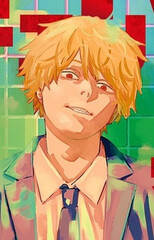

Описание
Шестнадцатилетний парень с растрёпанными светлыми волосами и заострёнными зубами. Будучи маленьким мальчиком, унаследовал долги умершего отца. Чтобы расплатиться с долгами, Дэндзи заключил контракт с демоном-бензопилой Почитой. Он становится охотником на демонов благодаря силе Почиты, взамен кормя последнего своей кровью. Продал несколько своих органов, чтобы быстрее расплатиться с якудзой, но те, будучи под контролем демона, убивают парня. Почита не смог смириться со смертью друга, поэтому стал его сердцем, тем самым создав новый контракт: Дэндзи должен исполнить все свои мечты и жить нормальной жизнью. Воскреснув, он получил возможность превращаться в демона-бензопилу. После встречи с Макимой становится частью правительственной организации охотников на демонов.
|
Внешность

Другие персонажи
Макима
Пауэр
Аки Хаякава
|